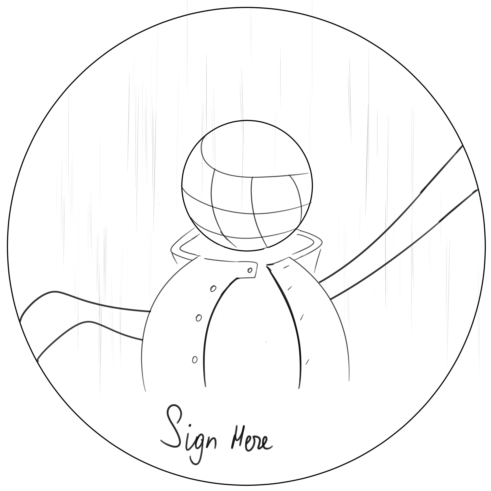

Overview
The Project went the following way:
Research & Interviews - Where we gathered insight on the target demographic as well as the main listeners of their Music Genre (Neo-Smartlappen).
Brainstorm & Ideation - Where we came up with ideas and concepts (I was responsible for heir visual Implementation).
Preliminary Feedback & Refining - We gathered Feedback from the Clients as well as People from the Target Audience.
Final Showcase - Even though our Products would not get chosen in the end, our Ideas still were to the Client's liking. Some of the Organizational elements (like a consistent QR Code that leads to 1 page with all their Socials) were welcomed and taken into account.

For this Logo, I went for a stylized 70s vibe that is similar to the Sound of their Music. The Sound Waves at the top make their relation to Music clear. They are also drawn in a way that resembles the Rain, thus, emphasizing the feel of 'Blues' in their genre of Music. A finishing touch in form of everything being connected by these 'cords' that are often associated with Microphones.

This is an Early Concept for the Beer Coaster's Design. I wanted to come up with a Mascot or Character the duo could use as a part of their image. So, in this sketch, I drew a Microphone-headed Person in a raincoat with some free space at the bottom that would be used for Signing autographs, or just to display their Logo/Band Name. In the end, the Client decided that just using a Logo would be good enough.

Here I came up with a T-Shirt Design they could print and sell as Merchandise to people. It featured the Logo in the middle as well as multiple Colorful stylized stickers all over it. While those stickers were not made by me, their purpose was to pitch the idea and convey how it would all look together on a Finished Product.